莎莉·克拉克走进了她的卧室，几分钟前，她的丈夫史蒂夫刚把他们8周大的孩子哈利哄睡。一进入卧室，莎莉就尖叫起来，只见哈利躺在摇椅里，脸色发青，看上去已经没了呼吸。尽管她的丈夫和救护人员都为哈利进行了心肺复苏，但哈利仍在一小时后离开了这个世界。这对任何妈妈而言都是一场可怕的悲剧，但它已经第二次发生在莎莉·克拉克身上了。
一年多前的圣诞夜，史蒂夫离开他们在曼彻斯特郊区威尔姆斯洛的家，去参加公司的圣诞晚宴。当晚，莎莉把她11周大的儿子克里斯托弗放入婴儿睡篮。大约两个小时后，莎莉发现克里斯托弗失去了意识，脸色发灰，她马上叫了救护车。尽管医院努力抢救，但克里斯托弗再也没有醒过来。3天后进行的尸检将他的死亡归因于下呼吸道感染。[书ji分 享V 信foufoushu]
然而，在哈利死后，克里斯托弗的尸检结果被翻找出来做重新查验。唇部切口和腿部瘀伤原本被视为急救时造成的损伤，但现在却被怀疑有更险恶的动机。当法医重新分析克里斯托弗的组织样本时，第一次尸检时遗漏的死前肺部出血被重新纳入考虑范围，病理学家据此推断死因可能是窒息。
哈利的尸检报告显示他生前经历了视网膜出血、脊髓损伤和脑组织撕裂。这些迹象表明哈利可能死于过度摇晃。将两次尸检结果放在一起，警方认为有足够的证据可以逮捕莎莉·克拉克和史蒂夫·克拉克。英国皇家检察机关决定不对史蒂夫提起诉讼（因为他在克里斯托弗离世时不在现场），但莎莉被指控谋杀她的两个儿子。
在接下来的审判中，我们将看到4个数学错误如何造成了一场被视为英国历史上最严重的司法误判。在本章中，通过讲述莎莉的故事，我们将共同探索数学错误可能导致的一些悲惨但在法庭上相当常见的错误。在这些案例中，有很多遭遇类似的受害者，我们先来看一位法国军官因从未犯下的罪行被投入残酷的监狱的故事。
在法庭上运用数学原理的做法由来已久，但通常不太引人注意。第一个值得注意的误用是在一场政治丑闻中，它差点儿致使法兰西共和国分裂，这次事件就是世界闻名的“德雷福斯冤案”。1894年，一名法国清洁女工在德国驻巴黎大使馆工作时，回收了一份被丢弃的备忘录。备忘录上说有间谍向德国人提供法国的军事机密，于是在法国军队中掀起了一场搜查德国间谍的行动，最终导致法国犹太炮兵军官阿尔弗雷德·德雷福斯上尉被捕。
在军事法庭上，笔迹专家认为德雷福斯是无辜的。但由于法国政府对这个结果并不满意，于是任命德不配位的阿尔方斯·贝尔蒂隆以巴黎身份查验局局长的身份调查此事。令人困惑的是，贝尔蒂隆声称的确是德雷福斯写下了这张纸条，而且他故意让笔迹看起来像是伪造的，这被称为自动伪造。接着，贝尔蒂隆又根据备忘录中相同多音节词的笔画中的一系列相似之处胡乱编造出看似深奥的数学论证。他声称任何两个相同单词的开头或结尾笔划相似的概率是1/5。他接着计算出在13个相同的多音节词的26个开头和结尾处发现4个巧合的概率是1/5的4次方，约为万分之16。显然，这应该不是一种巧合。贝尔蒂隆认为，这样的相似之处一定是“小心行事的结果，并且代表了明确的意图，可能是一个秘密代码”。[1]他的观点足以说服七人陪审团，或者至少让他们产生怀疑。德雷福斯最终被判有罪，并被判终身监禁在法属圭亚那海岸几英里外的恶魔岛上。
贝尔蒂隆当时的数学论证十分令人费解，以至于德雷福斯的辩护团队和政府专员都无法理解。主审法官很可能同样感到困惑，但也对贝尔蒂隆提出的伪数学论据无可奈何。贝尔蒂隆的神秘计算最后是由亨利·庞加莱（我们将在第6章再次提到他）解开的，庞加莱是20世纪最杰出的数学家之一。在初审定罪的10多年后，庞加莱发现了贝尔蒂隆计算中的错误。贝尔蒂隆计算的是4个单词中出现4次巧合的可能性，而不是13个相同单词的26个开头和结尾组成的集合中出现4次巧合的可能，前者当然可能性更低。
打个比方，想象一下你在打靶练习结束后去检查人形靶子。如果你发现人形靶子的头部或胸部被击中了10次，你可能会认为射手非常厉害。当你后来发现他总共进行了100次甚至1 000次射击时，你可能就会觉得他的枪法也没什么了不起的。贝尔蒂隆的分析亦如此。4个单词中出现4次巧合确实更不太可能，但在贝尔蒂隆分析的26个开头和结尾中一共有14 950种不同的方式可以得出这4种结果。所以，贝尔蒂隆发现的4次巧合同时出现的真实概率大约是18%，比他用来说服陪审团的数字大了100多倍。如果考虑到贝尔蒂隆更愿意看到5个、6个、7个或更多的巧合这一事实，我们就可以重新计算找到4个或更多巧合的概率，大约是80%。找到贝尔蒂隆认为“不寻常”的巧合的数量远比找不到它们的可能性大得多，就这样，庞加莱揭露了贝尔蒂隆的计算错误，并宣称试图将概率论应用于此类问题是不合理的，从而揭穿了这次异常的笔迹分析，最终帮德雷福斯脱了罪。[2]德雷福斯在经历了4年恶魔岛的艰苦生活，又在法国忍受了7年的耻辱之后，最终于1906年获释，并晋升为少校。他的名誉得以恢复，在第一次世界大战中继续为自己的国家而战，并在凡尔登的前线证明了自己的忠诚。
德雷福斯的案例既证明了数学证据的力量，也说明了它们容易被滥用。在下文中，我们将反复审视这样一个观点：当一个数学公式被提及时，为了尊重提出它的学者，我们只是点点头表示同意，而没有做进一步解释。有关数学论证的神秘之处在于，它们总是令人费解，而且往往令人印象深刻。以数学形式出现的确定性幻觉（我们在前一章中遇到了这类现象，它让人们毫无保留地接受医学测试的结果）让想提出质疑的人哑口无言。可悲的是，我们仍没有从德雷福斯的审判中吸取教训，也没有从历史上的许多其他数学误用事件中吸取教训，造成的结果就是让无辜的受害者一次又一次地遭受不公。
正如我们在前一章分析的医学测试那样，法律中也充满了必须做出二元判断的情况：对或错，真或假，无辜或有罪。许多西方国家的法庭遵循“无罪推定”的原则：举证责任由原告而非被告承担。几乎所有国家都已经废除了与之相反的“有罪推定”原则，这种做法必然导致更多的假阳性和更少的假阴性结果。然而，有一些现代国家更倾向于有罪推定，而非无罪推定。比如，日本刑事司法系统的定罪率为99.9%，其中大多数定罪都以供认作为依据。[3]相比之下，2017—2018年，英国皇家法院的定罪率为80%。日本的高定罪率是一个令人印象深刻的统计数据，但日本警方真能做到在每1 000起案件中抓到999起的犯案者吗？
这种高定罪率部分归因于日本警方采用的苛刻的讯问技巧。他们可以免责拘留嫌疑人3天，可以在无律师在场的情况下审讯嫌疑人，并且不需要做面谈记录。这些强硬的审讯技术是日本法律制度的产物，通过认罪确定犯罪动机是做出有罪判决的一个非常重要的部分。由于上级向审讯人员施加压力，要求审讯人员在做实际调查之前先获取口供，这使得情况更加复杂。在日本，许多嫌疑人似乎愿意自行认罪，以避免审判带给他们的家人的耻辱，这使得警察的工作变得更容易。近期有4名无辜人员因恶意网络威胁罪被捕，这凸显了日本司法系统中虚假供词之风的盛行。在真正的行凶者供认其罪行之前，两名嫌疑人已经被迫做出虚假供述。
日本倾向于有罪推定，这是一个值得注意的例外情况。在世界上的大部分地区，无罪推定的支持者众多，以至于它被列为联合国《世界人权宣言》中的国际人权之一。18世纪的英国法官兼政治家威廉·布莱克斯通甚至对无罪推定做出了量化叙述：“纵使有10个有罪之人逃脱了法律制裁，也比一个无辜者被判有罪好。”这种观点使我们坚定地站在假阴性阵营中，使那些可能犯了罪但却不能被证明有罪的人逍遥法外。即使有证据证明被告有罪，除非这些证据能使陪审员或法官毫无疑义地信服，否则被告往往也会被释放。而在苏格兰的法庭上，还存在第三种裁决，即使只是名义上的，也能降低假阴性的比例。如果法官或陪审团不太相信被告是无罪的，但也不足以认定其有罪，就会做出“未经证明”的判决。在这些案件中，虽然被告被判无罪，但判决本身也没有错。
在莎莉·克拉克的法庭审判中，相互矛盾的证据使得陪审团很难达成有罪或无罪的一致判定。莎莉坚称没有杀死自己的孩子，英国内政部病理学家兼控方的专家证人艾伦·威廉姆斯博士则另有说法，但他提供的医学证据对陪审团来说过于复杂。审判前，控方认为威廉姆斯在哈利的尸检过程中发现的脑部撕裂、脊髓损伤和视网膜出血很容易遭到第三方专家的质疑。因此，控方改变了方向并试图说服陪审团哈利的死因是窒息，而不是最初声称的死于剧烈晃动，但相关医学证据并不明确。
除此之外，辩方和控方围绕两个孩子死因的间接证据展开了激烈的辩论，导致局面变得更加混乱。控方将莎莉描绘成一个虚荣自私的职业女性形象，认为她厌恶孩子给她的生活方式和身体带来的变化，于是这个迫切地想要回到产前生活的女性亲手杀死了自己的孩子。但辩方驳斥说，既然如此，那么为什么她在第一个孩子死亡后选择生下第二个孩子呢？她又为什么要在接受审判时怀上第三个孩子呢？辩方指出，莎莉显然对她的第一个儿子的死感到很遗憾。控方则歪曲了这一论点，并怀疑她的悲伤是假装的。参与抢救克里斯托弗的医生作证说，在失去了她的长子后，莎莉流露出和正常人一样的痛苦。这些持续的争论让陪审团无法看清真相。
当病理学家就肺出血和硬膜下血肿的程度争论不休时，专家证人罗伊·梅多教授用一个统计数字驱散了陪审团的困惑，进而做出了明确的判决。在梅多看来，来自富裕家庭的两个孩子发生婴儿猝死综合征（SIDS，通常被称为婴儿床死亡）的概率是七千三百万分之一。对许多陪审员来说，这是他们从这场审判中获得的最重要的信息——7 300万是一个大到让人无法忽略的数字。
1989年，英国儿科医生梅多编辑了一本名为《虐待儿童的开端》的书，并在其中提出了所谓的梅多定律：“一个婴儿突然死亡是悲剧，两个婴儿突然死亡是可疑的，然而，除非另有确证，3个婴儿突然死亡就是谋杀。”[4]然而，这句流传甚广的话是对概率的基本误解。梅多在莎莉·克拉克的案件中对陪审团就做出了这样的误导，因为相关事件和独立事件本质上是不同的。
如果对一件事的了解会影响另一件事发生的概率，这两个事件就被称为相关事件，否则为独立事件。如果我们已知个体事件的发生概率，通常的做法是将这些概率相乘，就可以得到组合事件的发生概率。比如，从一个群体中随机选择样本，女性的概率就是1/2。如表3–1所示，1 000人中平均有500人为女性。在智商测试中，随机选择的样本得分高于110的概率是1/4，表现在表3–1中为1 000人中有250人的测试分数高于110。那么，随机挑出一人是女性且分数超过110的概率是多少？我们将1/2和1/4相乘得到1/8。这与表3–1中样本为女性且智商高的有125（1 000/8）个人相一致。将两个概率相乘得出女性且智商高的联合概率，这种做法是完全可以接受的，因为智商和性别是相互独立的因素：你的智商有多高和你是何种性别完全无关。
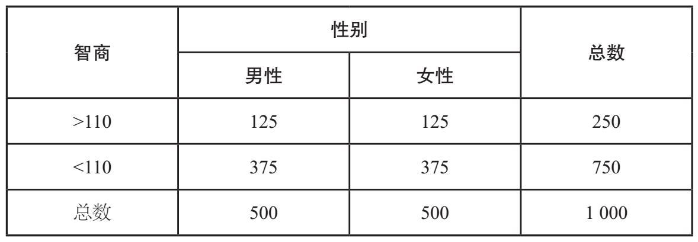
在英国，孤独症的发病率约为1%。[5]为了得到女性的孤独症发病率，我们可以简单地将两个概率（1/2和1/100）相乘，结果为1/200。换句话说，每1 000人中约有5个女性患病。然而，孤独症和性别并不是互相独立的。当我们分析随机选择的1 000个人的群体时，如表3–2所示，我们发现男性患孤独症（8/500）的概率是女性的4倍（2/500），即孤独症谱系中只有1/5是女性。[6]我们需要借助这些额外的信息来计算在随机选择的人群中患孤独症的女性的概率，最终结果为2‰，而不是5‰。由此可见，我们如果假设这两个因素互相独立，就会得出错误的结果。这说明，当我们对事件的独立性做出了错误假设时，就很容易犯下严重的错误。
梅多在他的证词中考虑的是因SIDS引发的死亡。他的数据源于一份关于婴儿床死亡的报告（当时尚未发表），他负责撰写了这篇报告的序言部分。[7]这篇报告研究了英国三年内共计473 000例活产婴儿中的363个SIDS病例。除了提供总人口出生率之外，该报告还根据母亲的年龄、家庭收入和家庭中是否有人吸烟来对数据进行分层。对于一个富裕的非吸烟家庭，母亲年龄超过26岁，比如克拉克的情况，每8 543名婴儿中只有一例SIDS。
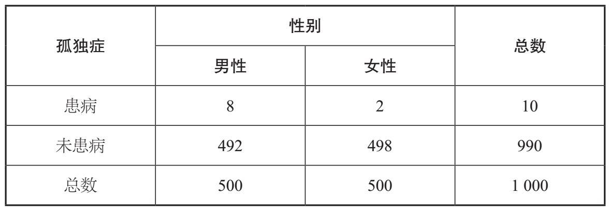
梅多犯下的第一个错误是他假设SIDS的致病因素是完全独立的。正因如此，他觉得将1/8 543乘以1/8 543来计算一个家庭中出现两例SIDS的概率是合理的，这才得到了七千三百万分之一的结果。为了证明他的假设是正确的，他甚至说：“没有证据表明婴儿床死亡与家庭因素有关，但有大量证据表明虐待儿童的情况确实存在。”有了这个数据，他提出，鉴于英国每年的人口出生率约为70万，那么像这样的婴儿猝死事件大约每100年才会发生一次。
他的假设非常不正确，因为与SIDS有关的已知风险因素有很多，包括吸烟、早产和两个婴儿睡一张床。2001年，曼彻斯特大学的研究人员发现了与免疫系统调节相关的基因标记，这些标记会使婴儿发生SIDS的风险增加。[8]此后，他们又发现了更多的遗传风险因素。[9]同一对父母的孩子可能会拥有许多相同的基因，并有可能增加SIDS的风险。如果一个孩子死于SIDS，那么该家庭可能会有与之有关的风险因素。因此，该家庭中孩子后续死亡的概率大于背景人口的平均值。实际上，一些数据显示，英国每年约有一个家庭会第二次发生因SIDS导致的婴儿死亡事故。
对SIDS的致死概率我们可以做一个类比。想象有10袋棋子，其中9个袋子里各装有10个白色棋子，剩下一个袋子里装有9个白色棋子和1个黑色棋子。这种初始状态如图3–1左侧所示。你随机选择一个袋子，然后从这个袋子里随机挑选一个棋子。由于一共有100个棋子且它们被选中的概率相同，所以第一次选中黑色棋子的概率是1%。之后，你把它放回它原本的袋子里并从中再取出一个棋子，不管其他9个袋子。如果你第一次选中的是黑色棋子，你就会知道你正在从包含黑色棋子的那个袋子里选择第二个棋子，这使得你选中黑色棋子的概率比原来高得多，为1/10，而不是1/100。在这种情况下，两次都选中黑色棋子（概率为1/1 000），比简单地用初始概率乘以自身得到的1/10 000的概率更大。同样，一旦某个家庭中有一个孩子死于SIDS，第二个孩子死于SIDS的可能性就会增加。
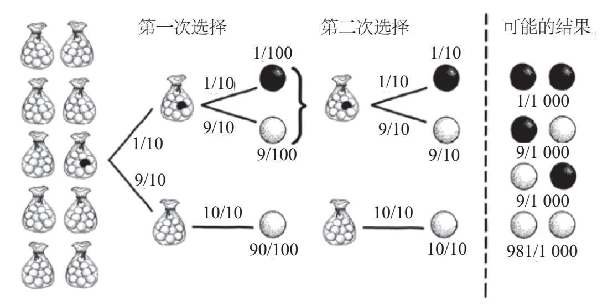
图3-1 计算选中黑色或白色棋子概率的决策树。为了计算每次选中白色或黑色棋子的概率，只需要跟随树上的每个分支，乘以相应的概率即可。比如，第一次选中黑色棋子的概率为1/100。一旦我们第一次确定了从哪个袋子里取，那么第二次也是从这个袋子里取。两次取出的棋子的所有可能情况列于上图中的虚线右侧
事实上，就SIDS而言，当你的第一个孩子出生时，你的家庭风险因素并不是随机选择的，而是预先存在的。可以说，从一开始，你选出的袋子里要么全是黑色棋子，要么不是。图3–2的决策树对此进行了展示。如果你在两种情况下选择的都是含有黑色棋子的袋子，选中两个黑色棋子的概率就会增加到1%。所以，简单地用背景人口风险乘以SIDS的发病率得出连续两次发生SIDS的概率是不对的。
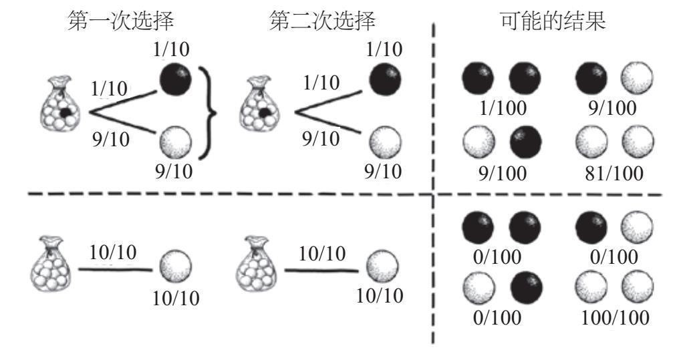
图3-2 这两棵决策树模拟了这样的情况：预先指定好你选取的袋子，并且两次都从同一个袋子抽取。对于每棵树，两次抽取的可能结果列于虚线右侧。很显然，如果你抽取的袋子里没有黑色棋子，唯一的可能就是你两次抽中的都是白色棋子
*
梅多使用分层概率的方法还存在其他问题。他所引用数据的报告给出的总人口风险是相对较高的——1/1 303，这是在未按社会经济指标对数据进行分层情况下得到的结果。但梅多没有使用这个数字。相反，他通过考虑克拉克的背景，得出单一SIDS案例的可能性极低的结果（并且，由于他错误地忽略了SIDS之间的相关性，导致一个家庭出现两个SIDS案例的可能性变得更小），并且他也忽略了那些看起来更有可能引发死亡的因素。比如，他故意忽略这样一个事实，即莎莉的两个宝宝都是男孩，而因SIDS死亡的男孩数量差不多是女孩的两倍。这一点非常不利于检方的论点，因为一个家庭出现两个SIDS案例的可能性变大了，莎莉杀死她的两个孩子的论点也就不大可能成立了。
检察官仅选择有害的背景特征来歪曲统计证据，可能会被视为不道德或具有误导性的行为，而且这种做法还存在更深层次的问题。梅多引用的统计报告本是为了识别高风险的人口统计数据，从而更有效地配置医疗卫生资源，所以才对数据进行了分层。但这份报告从未用于推断这些群体中某个个体的SIDS风险。该报告对英国近50万新生儿进行了粗略的调查，这意味着每个个体的情况都没有经过详细调查。相比之下，对莎莉·克拉克的审查是一种针对特定指控的详细调查。检方只选择了与莎莉和史蒂夫的背景相符的数据，并认为可以用这些统计规律来描述克拉克孩子的SIDS风险。这其中的错误在于他们把个体的特征与人群的统计特征相提并论了。这是生态谬误的典型案例。
我们常常认为用单一的统计数据就可以描述一个多样性人群，但这是一种未经证实的假设，我们其实犯了一类典型的生态谬误。比如，2010年有研究指出英国女性的平均预期寿命为83岁，男性的平均预期寿命为79岁，英国人口预期寿命为81岁。生态谬误的一个简单例子是，由于女性的平均预期寿命高于男性，因此随机选择的任意一位女性都会比男性的预期寿命长。这种谬误有一个特殊（也很合适）的称谓，即“笼统的概括”。另一个关于预期寿命的常见生态谬误是，“我们的寿命将变得越来越长”，懒惰的记者经常这样说。事实上，并不是每个人的寿命都比他们之前的预期长。所以，上述说法很天真。
然而，生态谬误可能更加微妙。你也许会惊讶地发现，尽管男性的平均预期寿命为78.8岁，但大多数英国男性的寿命都要长于人口预期寿命——81岁。乍看之下，这个表述似乎是矛盾的，但事实上，这是因为我们的统计数据存在差异。有一小部分人会在年轻时死亡，而这会在相当大的程度上拉低平均死亡年龄（通常所说的预期寿命，就是将每个人的死亡年龄加在一起，再除以总人口数）。令人惊讶的是，这些早期死亡数据把平均值拉得远低于中位值（位于中间位置的年龄，因为许多人在这个年龄之前就死了）。英国男性的死亡年龄中位值为82岁，这意味着有一半的男性至少能活到这个年纪。所以，这种情况下的统计数据（平均死亡年龄为78.8岁）对于整个人群来说是有误导性的。
钟形曲线或者正态分布可用于刻画日常生活里的很多数集，比如身高和智商分数。钟形曲线呈对称形状，其中一半数据低于平均值，另一半数据高于平均值。这意味着满足正态分布的平均值和中位值往往趋于重合。因为我们知道这条优美的曲线可以描述物理世界的信息，所以大多数人都假设平均值近似等于中位值。平均值偏离中位值的分布通常会令人感到惊讶。如图3–3所示，英国男性的死亡年龄呈非对称分布，我们通常将此类分布称为偏态分布。
正如我们在上一章中看到的那样（为了避免虚警而第一次提到中位值），家庭收入呈现出另一类分布，中位值描绘了与平均值截然不同的场景。比如，图2–1所示的英国家庭收入分布就有些偏斜，也更混乱一些，相当于把图3–3翻转过来。大多数英国家庭的可支配收入较低，但有一小部分高收入者让分布发生了偏斜。在英国，2014年有2/3的人口的每周收入低于平均水平。
可能下面这个古老的谜题是一个更令人惊讶的例子：“你在街上随便遇到一个人，拥有超过平均数条腿的概率是多少？”答案是：几乎为100%。极少数没有腿或只有一条腿的人拉低了平均值，因此每个有两条腿的人都超过了平均水平。在这种情况下，如果你还坚称平均值能正确表征人们口中的任何个体，那真是荒谬至极。
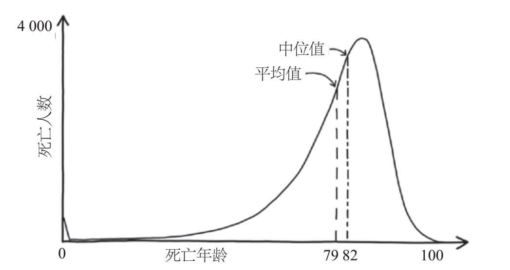
图3-3 英国男性的年均死亡人数随年龄呈偏态分布。平均死亡年龄不到79岁，而中位值为82岁
显然，使用错误的平均值来描述群体可能会导致生态谬误。当我们试图对平均值取平均值时，又会造成另一种生态谬误，即辛普森悖论。辛普森悖论在衡量经济体的健康状况[10]，理解选民概况[11]，以及药物开发（也许是最重要的一个方面）[12]等方面产生了各种影响。假设我们要开展降血压新药芬塔可（Fantasticol）的对照试验，有2 000人报名参加了这项试验，男性和女性数目相等。我们将他们分成对照组和试验组，每组1 000人。A组患者服用芬塔可，B组患者服用安慰剂。在试验结束时，发现A组中有56%（1 000人中有560人）的患者血压降低，而B组中只有35%（1 000人中有350人）的患者血压降低（见表3–3）。试验结果显示，芬塔可似乎确实有助于降低血压。
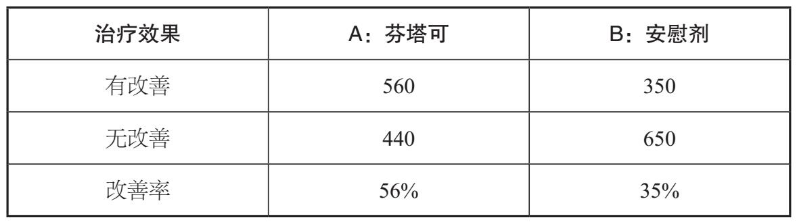
为了正确评估药物疗效，重要的是弄清楚是否存在任何性别特异性的影响，我们需要从这些数据中分析出该药物如何影响男性和女性。表3–4给出了更详细的划分，当分析分层结果时，我们可能会感到有些震惊。在参与试验的男性中，B组有25%（800人中有200人）的患者血压状况有所改善，但A组只有20%（200人中有40人）的患者血压状况有所改善。在参与试验的女性中，同样的趋势显而易见。B组女性中有75%（200人中有150人）的患者血压状况得到改善，而A组女性中只有65%（800人中有520人）的患者血压状况得到改善。对男性和女性而言，服用安慰剂患者的治疗效果好于服用药物的患者。以这种方式查看数据的话，芬塔可的效果似乎不如安慰剂。为什么在数据分层的情况下是一个结果，而在数据合并的情况下又是另一个结果呢？
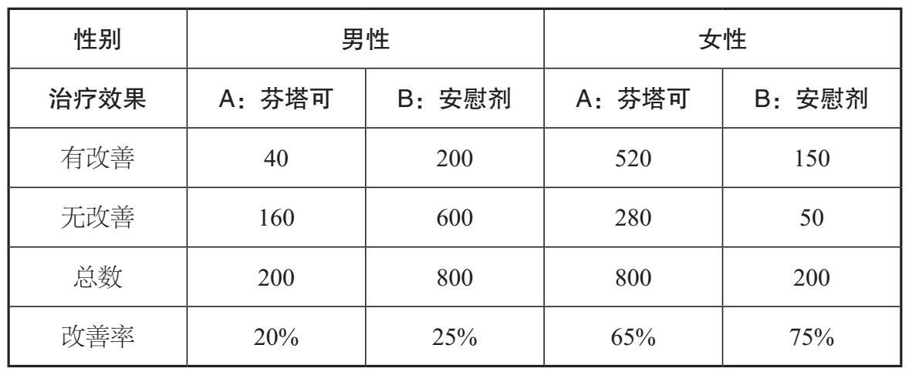
答案在于“混淆变量”，也称“潜伏变量”。在这个例子里，潜伏变量是性别。事实证明，性别对于试验结果可能非常重要。在整个试验过程中，女性血压在自然条件下的改善情况优于男性。因为参与者的性别比例在两组中是不同的（A组中有800名女性和200名男性，而B组中有200名女性和800名男性），A组的疗效主要得益于血压状况自然改善的女性，使得芬塔可的疗效似乎比安慰剂更好。虽然参与试验的男性和女性人数相等，但因为男性和女性在两组中的占比并不相等，所以对两种性别的平均改善率（男性为20%，女性为65%）取平均值，并不能得到在表3–3中观察到的芬塔可的总体改善率56%。这个例子告诉我们，不能简单地对男性平均值和女性平均值求平均。
如果我们已经控制了潜伏变量，对平均值求平均就是可行的。如果我们事先知道性别就是这样一个变量，我们就可以按照性别对结果进行分层，以获得关于芬塔可的真实疗效数据。或者，我们可以通过让每组中男女人数相等来控制性别因素，如表3–5所示。服用芬塔可或安慰剂的男性及女性的改善率与表3–4相同，但是，当把结果合并到表3–6中时，芬塔可的改善率为42.5%。很明显，药物比安慰剂（改善率为50%）效果更差，而不是更好。当然，可能还存在其他混淆变量，比如年龄或社会人口统计，我们目前尚未考虑这些变量。
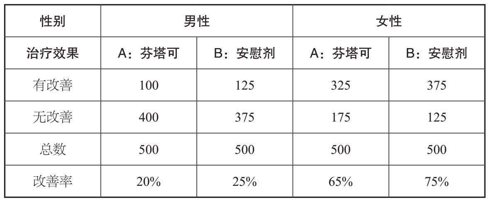
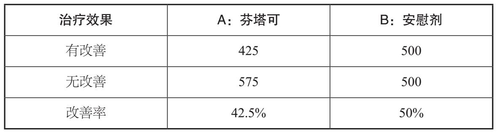
对于那些设计临床试验的人来说，生态谬误和设计良好的对照组是非常重要的考虑因素，但已有例子表明它们也会在其他医学领域产生错误的结论。20世纪六七十年代对妊娠期抽烟孕妇的观察表明，她们生下的孩子会出现一个奇怪的现象。在所有出生时体重较轻的婴儿里，如果其母亲吸烟，那么他们在出生后第一年死亡的可能性明显低于那些不吸烟母亲生下的孩子。出生体重低一直与较高的婴儿死亡率有关，但这个数据显示妊娠期吸烟似乎为出生体重低的婴儿提供了某种保护。[13]然而，实际上结论完全不是这样。[14]在这个悖论里，有一个混淆变量被忽略了。
虽然出生体重低通常与较高的婴儿死亡率相关，但前者并不是后者的诱因。通常，两者可能都由某些不利因素引起，即潜伏变量。吸烟和其他不利的健康状况都会降低婴儿出生时的体重并增加死亡率，但它们对婴儿死亡率的影响程度不同。吸烟会导致许多健康的婴儿出生时体重不足，而导致出生体重低的其他原因通常对婴儿的健康状况更具威胁性，它们造成的婴儿死亡率更高。孕期吸烟导致出生体重低的婴儿比例增加，但婴儿死亡率仅是略有增加，不及前者增加的速度快。这意味着，这些婴儿出生第一年的死亡率要小于由其他更致命因素导致的婴儿死亡率。
梅多将克拉克家庭归入低风险SIDS的类别，这种生态谬误使得莎莉的两个孩子的死亡似乎变得更加可疑。但即使与SIDS在总人口中的占比进行比较，也会造成生态谬误。实际上，基于总人口层面的假设更公平一些，因此更适用于克拉克家庭的情况。无论如何，对SIDS做独立假设是不正确的，这会使事情变得更糟。
梅多之前的统计错误尚未得到纠正，接着他又犯了更严重的统计错误。这个错误在法庭上非常普遍，所以它被称为“检察官谬误”，即如果嫌疑人是无辜的，就几乎不可能找到某个特定的证据证明其有罪。对莎莉·克拉克来说，这个断言可以表述为，如果她没有杀死她的两个孩子，他们就死于SIDS，而这一可能性低至七千三百万分之一。由此检察官错误地推断出另一种解释：嫌疑人很可能是有罪的。然而，该论证没有考虑嫌疑人可能是无辜的情况，即莎莉的孩子是出于自然原因死亡的。它也没有考虑控方做出的解释，即嫌疑人有罪（莎莉谋杀了两名婴儿）的可能性同样微乎其微，甚至更小。
为了解释检察官谬误的本质，假设我们正在调查一桩罪案，我们的其中一个证据是车牌号的一部分，它在远离现场的地方被发现，可能属于罪犯。在这个例子中，我们假设所有车牌号都由7个数字组成，可从数字0~9中任意选择。7个数字中的每一个都有10种可能性，这意味着共有10×10×10×10×10×10×10或10 000 000种可能的车牌号。目击者只记得该车牌号的前5个数字，最后2个没看到。一旦确定了前5位数字，我们就只需要知道剩余2个数字即可。这2个未知数字中的每一个都有10种可能，这意味着共有100（10×10）种可能。
通过这个线索，我们找到了一名嫌疑人，其车牌号的前5个数字与证人的记忆相符。如果嫌疑人是无辜的，那么行驶在路上的1 000万辆汽车中只有99辆汽车车牌号的前5个数字与证词相匹配，因此，证人看到这样一个车牌号的概率就是99/10 000 000，小于十万分之一。这种微小的概率似乎可以确证嫌疑人是有罪的，然而，这种错误的思想无疑犯了检察官谬误。
如果嫌疑人是无辜的，在已有证据的情况下，证人目击到证据的可能性与嫌疑人无辜的可能性并不一致。回想一下，与证人描述相符的100辆汽车中有99辆不属于嫌疑人，嫌疑人只是100人中的一个。因此，嫌疑人有罪的概率仅为1/100，可能性并不大。当然，能将嫌疑人锁定在犯罪区域或将其他车辆排除在该区域之外的其他证据，都将增加嫌疑人有罪的可能性。然而，根据目前的唯一证据，最有可能的结论是嫌疑人无罪。
检察官谬误只在做无辜解释的可能性非常小时才真正有效，否则很容易被看出漏洞所在。比如，假设你去调查一起伦敦入室盗窃案。在案发现场发现的属于罪犯的血液与嫌疑人的血液属于同一类型，除此之外未发现其他证据。已知只有10%的人拥有这种血型，因此，如果被告是无辜的（其他人犯了罪），那么在现场发现此类型血液的可能性为10%。但检察官谬误会据此推断，嫌疑人无罪的可能性也只有10%，而有罪的概率是90%。显然，在像伦敦这样拥有1 000万人口的城市中，有大约100万人（占总人口的10%）与在案发现场发现的血型相匹配。若仅基于血液证据，嫌疑人有罪的可能性实际上为100万分之一。虽然这种血型相对少见（1/10），但因为有这么多人共同拥有这种血型，所以这一证据本身对于判定拥有该血型的嫌疑人是否有罪几乎毫无用处。
*
在上面的例子中，谬误是较为明显的。仅基于大量人群中个体的血型，就推断出无罪概率低至1/10，这实在很荒谬。然而，在莎莉·克拉克的案例中，这个数字非常小，对于未受过统计训练的陪审团来说，就不太容易看出其中存在的检察官谬误了。值得怀疑的是，梅多是否知道自己犯下了检察官谬误，他说：“……在这种情况下婴儿自然死亡的可能性极小，7 300万人中仅有一人如此。”
未受统计训练的陪审团从这一陈述中得出的推论可能是：“两名婴儿死于自然原因的现象极为罕见，因此对一个有两个婴儿死亡的家庭来说，他们的死亡出于非自然原因的可能性就变得非常高了。”
梅多通过将七千三百万分之一的概率放在一个更加丰富却虚构的背景中强化了这种误解。他声称，一个家庭中发生两次SIDS的可能性相当于在四年一次的英国国家越野障碍赛马中赔率为80∶1的非种子赛马每次都能获胜。这使得两名婴儿是自然死亡的可能性微乎其微，因此陪审团认为，莎莉极有可能谋杀了她的两个孩子。
两个孩子相继死于SIDS是小概率事件，然而，这并不能为我们证明莎莉杀死了孩子提供任何有用的信息。事实上，检方提出的另一种解释更不可能发生。一个家庭发生两起婴儿谋杀案的概率是两个孩子均死于SIDS的概率的1/100~1/10。[15]若不考虑其他证据，并假设1/100这个数据成立，那么莎莉只有1/100的可能性有罪。然而，这种可能性从未被提交给陪审团进行比较，因为辩方一直没有批判性地质疑过梅多的统计数据的权威性。
*
经过两天的审议，陪审团于1999年11月9日以10∶2的结果判定莎莉有罪。据报道，其中一名陪审员向他的朋友透露，梅多的统计数据在判决中影响了大多数陪审员的决定。莎莉最终被判无期徒刑。在宣读判决书时，莎莉看向她的丈夫史蒂夫，史蒂夫对她说了句“我爱你”。史蒂夫始终是莎莉最坚定的支持者，她被关进监狱后，他也没有停止为她奔走呼告。
媒体不停地往克拉克一家的伤口上撒盐。《每日邮报》的标题是《酗酒律师绝望之下弑子》，而《每日电讯报》则刊出了《酗酒的“婴儿杀手”》的文章。莎莉因此声名狼藉，作为一名被定罪的婴儿杀手，还是一名警察的女儿，内心的煎熬让她痛不欲生。
莎莉在监狱里度过了一年，其间她与她的丈夫和幼子分离。她唯一的慰藉就是从陌生人那里收到的信件，这些人都认为她是无辜的。在监狱之外，史蒂夫也依然坚信莎莉是无罪的，并为她四处奔走。经过近12个月的艰苦努力，他们终于准备好上诉，并再次面对法官。上诉的主要依据是统计数据不准确，统计专家向法官和陪审团解释了将克拉克一家归为低SIDS风险类别的生态谬误，梅多错误地认为这些因素是独立的，从而对SIDS的致死率做了平方计算，陪审团也因此受到检察官谬误的影响。
主审法官们似乎接受了这些论点，他们虽然承认了梅多的统计数据不准确的事实，但他们又强调这些数据在粗略意义上是正确的。法官们认为，检察官谬误是如此显而易见，本应该由莎莉的辩护律师指出。他们还认为，之所以没有人提出反对意见，是因为这个谬误对每个人而言都非常清楚：
显而易见，“在有两个婴儿的家庭中，两个婴儿都死于SIDS的可能性是七千三百万分之一”的说法与“如果一个家庭中有两名婴儿死亡，那么他们均出于不明原因死亡的概率是七千三百万分之一”的说法并不相同。你并不需要把之归为“检察官谬误”就能看清这一事实。
法官得出的结论是，统计证据在审判中的作用微不足道，陪审团不可能被其误导。在一系列相互矛盾的医学证据面前，这些统计数字根本不是陪审团做出判决的决定性因素，反而更像佐证，它们不过是法官们驳回那些医学证据时的一种陪衬。莎莉的第二次判决是维持原判，当夜她被送回了监狱。
*
莎莉·克拉克的案件绝不是唯一一起概率被滥用和误读的案件。1990年，安德鲁·迪恩基于相似的检察官谬误被判处16年有期徒刑，罪名是他强奸了英格兰西北部曼彻斯特的三名女性。在审判中，控方律师霍华德·本特姆提交了在其中一名受害者身上发现的精液DNA证据，并声称来自迪恩血液样本的DNA与该精液样本的DNA相匹配。他询问专家证人：“除了安德鲁·迪恩之外，这份精液样本属于其他人的可能是300万分之一吗？”专家回复“是的”。专家接着补充说：“我的结论是，精液的来源就是安德鲁·迪恩。”法官在结案陈词中也声称300万分之一的概率“几乎可以确定迪恩是有罪的”。
事实上，300万分之一应该被解释为从人群中随机选择的个体具有与在犯罪现场发现的精液DNA相匹配的概率。鉴于当时英国大约有3 000万男性，那么其中约有10个男性与之相匹配，这大大增加了迪恩无罪的可能性，从几乎不可能的300万分之一变成了9/10。当然，这3 000万男性不可能都是嫌疑人。然而，即使我们把范围限定在距离曼彻斯特市中心一小时车程的700万人中，仍然至少有另一个男性与精液DNA证据相匹配，这就使迪恩无罪的概率变为50%。而检察官谬误让陪审团相信，迪恩犯罪的可能性比证据显示的程度高出几百万倍。
事实上，即便是将迪恩定罪的DNA证据也不像专家证人所说的那样无懈可击。上诉证据表明，迪恩的DNA和犯罪现场发现的精液DNA远没有那么接近。除迪恩之外，随机匹配的可能性大约是1/2 500，这让迪恩看上去更有可能是无辜的。在犯罪现场附近的300多万名男性中有1 000多名与DNA证据相匹配的个体，基于DNA证据判定迪恩有罪的可能性降至千分之一以下。对法医证据进行重新考量后，法官和专家证人都承认犯下了检察官谬误，对迪恩的有罪判决也随之撤销。
*
在英国学生梅雷迪思·克尔彻被谋杀的案件中，将DNA证据和概率结合在一起的做法发挥了关键作用。2007年，克尔彻在与来自意大利佩鲁贾的交换生阿曼达·诺克斯同住的公寓里被刺死。两年后，也就是2009年，诺克斯和她的意大利前男友拉斐尔·索莱西托被判谋杀克尔彻的罪名成立。控方提交的一个重要证据是一把刀，它的大小和形状与克尔彻身上的部分伤口一致。这把刀是在索莱西托的厨房里发现的，刀柄上有诺克斯的DNA，由此将索莱西托和诺克斯联系在一起。这把刀上还发现了另一个DNA样本，它很小，实际上只有几个细胞。在用这几个细胞生成DNA图谱之后，它与受害者克尔彻的DNA呈阳性匹配。
2011年，诺克斯和索莱西托对他们的有罪判决提起上诉，辩护律师把重点放在了将诺克斯和索莱西托联系在一起的唯一证据（刀上的DNA）上。
几乎每个人（唯一的例外是同胞兄弟或姐妹）都有一个独一无二的基因组，由A、T、C和G组合而成的碱基对构成了每个细胞中长链DNA的独特特征。如果将人类基因组中大约30亿个碱基对都读取出来并加以存储，所得到的序列将构成此人的唯一标识。然而，在法庭上使用的DNA图谱或存储在DNA数据库中的DNA图谱并不是个体基因组的完全精确序列。最初绘制DNA图谱时，因为包含全基因组图谱的数据异常庞大，所以耗时很长，费用也十分高昂。即便得到了全基因组图谱，对两组基因图谱的比较也无法在可接受的时间内获得。
通常我们会通过分析人类DNA的13个特定区域（称为基因座）来生成DNA图谱。因为我们从父母那里分别继承了一条染色体，所以每个基因座都有两个DNA区域。每个区域都由“短串联”复制体组成：一小段DNA重复多次。不同个体给定基因座处的复制体数目显著不同。实际上，这13个基因座是根据重复片段数量的多样性挑选出来的，这意味着在这13个基因座上存在着大量不同的复制体组合。DNA图谱描绘的是每个基因座上的复制体序列，可以通过电泳图的表格读取。电泳图表示原始DNA序列，看起来有点儿像地震计（用于测量地震）的读数，在特定的峰周围散布有低水平的背景噪声，对应于剖面中的每个基因座。从刀上提取的DNA样本的电泳图如图3–4中所示。
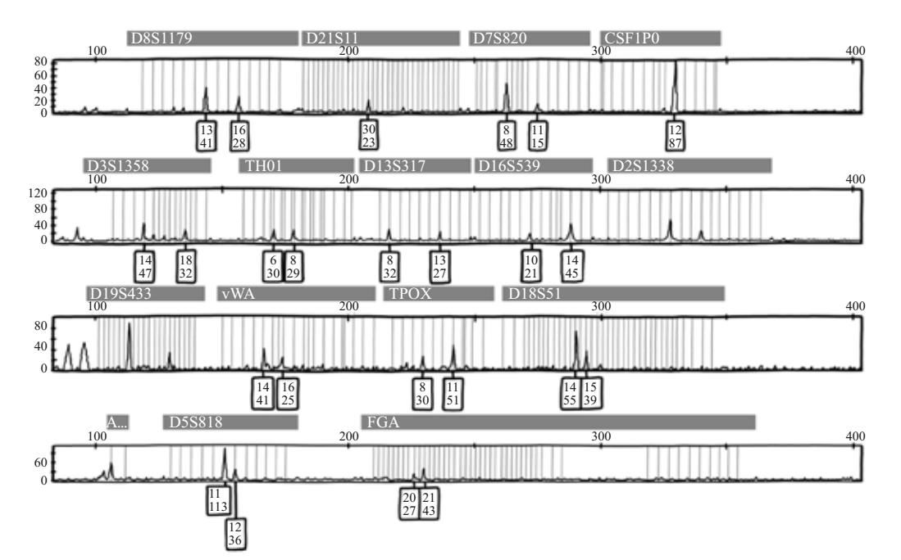
图3-4 在刀上找到的DNA样本的电泳图，当时认定它属于梅雷迪思·克尔彻。与标准DNA图谱的13个基因座对应的峰被标记出来，在一些片段上只能看见一个峰，这意味着该片段的拥有者在该基因座上从父母那里继承了同样数目的复制体。每个方块上的数字给出了DNA片段复制体的数目，下面的数字给出了信号的强度，对应峰的高度。大多数峰信号的强度都低于阈值50
我们可以把创建单独的电泳图类比为记录依次掷出的13个骰子的点数，每个骰子有18个面，并记录两轮结果。若两轮投掷骰子后得到完全相同的结果，则认为两个随机选择个体的DNA图谱完美匹配。在理想条件下，两个随机选择的不相关个体的DNA图谱匹配的概率低于百万亿分之一，这使得DNA图谱成为唯一的标识。如果两个电泳图上的峰值位置完全匹配，我们就可以合理地认为它们来自同一个人。
有时DNA的匹配结果是模糊的，因为DNA样本的年龄或质量的问题，只有部分特征可以恢复，所以不是每个基因座的信号都能获取到。部分DNA图谱无法得到明确的匹配，特别是小的DNA样本。当然也有可能是分析时产生的背景噪声淹没了电泳图中的信号。因此，关于DNA图谱中信号的强度是有公认的标准的。这成为诺克斯胜诉的唯一希望。
在第一次审判时，罗马警方法医遗传调查部门的首席技术总监帕特里齐亚·斯特凡诺尼博士认为，由于DNA样本的尺寸微小，与其将刀上的DNA样本分成两份，倒不如把所有片段集中起来创建足够大的样本。严格来说，这违反了经验做法：如果有两个样本，就可以用第二个样本证实第一个样本不太具有说服力或模棱两可的结论。但是，如果只使用一个比较大的样本，就没有了备用样本，第二次检测将无法进行。正如最初的试验表明的那样，电泳图在所有正确的位置上都有明显的峰值，并且与克尔彻的DNA图谱非常接近。但是，从图3–4的编号框中可以看出，轮廓中的大多数峰值的高度都远低于最低标准。由于斯特凡诺尼没有按照正确的程序生成图谱，上诉的辩方对刀上的DNA证据提出了质疑。
作为回应，控方要求重新测试一小部分细胞，以确证第一次测试的结果。最初的棉签没有检测到这些细胞，但来自第三方的法医专家发现了它们。然而主审法官克劳迪奥·赫尔曼拒绝了控方要求重新测试小样本的请求。
2011年10月3日，由法官和外行人组成的陪审团暂时休庭，审议判决结果。他们讨论了好久才回到法庭上，法庭的氛围变得紧张起来，令人压抑。尽管所有证据都已经过审查，但没有人能预测出判决结果。宣读判决书时，诺克斯瘫倒在椅子上，流下了欢乐和欣慰的泪水。陪审团为她洗清了谋杀克尔彻的罪名。赫尔曼法官在总结陈词中解释了他为何拒绝对刀上的第二份DNA样本进行检测，那就是两个没有经过正确的科学程序获得的结果，即使加在一起也不能得出可靠的结论。但在莉拉·施内帕斯和科拉列·科尔梅于2013年出版的著作《法庭上的数学：数字如何在法庭上被滥用》中，作者认为赫尔曼法官错了；有时，两个不可靠的测试也比一个要好。[16]
为了理解两位作者的观点，想象一下我们是在掷骰子，而不是做DNA匹配测试。我们想确认骰子是否公平，在这种情况下点数6朝上的概率应该是1/6；如果骰子被加权了，点数6出现的概率就是50%。因为我们不想做任何事前假定，所以在我们执行测试之前，假设每种情况的出现概率都是均等的。
我们有60次掷骰子的机会。如果骰子没有偏差，那么我们预测点数6平均会出现10次。如果它被加权了，那么我们预计它的出现次数平均是30次。如果我们在实验中看到30次或更多的点数6，我们将非常确定骰子被加权了，因为如果用的是未加权的骰子，这种情况就几乎不可能发生。同样，如果我们得到10次或更少的点数6，那么我们可以确信骰子是公平的。如果点数6的出现次数在10到30之间，我们就可以通过比较点数6在被加权和未被加权的情况下出现的次数来计算骰子被加权的概率。
在实验中我们掷了60次骰子，并在图3–5的上半部分记录了投掷结果，总共出现21次点数6。用未加权的骰子得到这么多次点数6的概率很低，仅为0.000 297。如果用的是加权骰子，得到21次点数6的概率仍然很小，为0.00693，这是骰子未加权时的概率的20多倍。投掷出21次点数6的结果更可能来自加权骰子，而非未加权骰子。我们可以通过让它们相加得到0.007 227来计算在这两种情形下出现21次点数6的组合概率。加权骰子占该概率的比例为0.00693/0.007227，约等于0.96。因此，骰子加权的概率为96%。这个推理过程相当令人信服，但也许还不足以给凶手定罪。
为了确保准确性，我们进行了第二次测试，再投掷60次。这一次，我们在图3–5的下半部分列出了出现点数6的次数，共计20次。如表3–7所示，如果骰子未加权，得到20次点数6的概率是0.000 780；如果骰子加权，则概率为0.00364。可见，骰子加权的概率是未加权概率的将近5倍。尽管与第一次测试的结果没有太大差别，但第二次计算得出的骰子加权的概率约为82%。看起来，第二次测试让我们对第一次测试的结果产生了怀疑。当然，第二次测试并没有证实我们的观念，即骰子是被加权的。
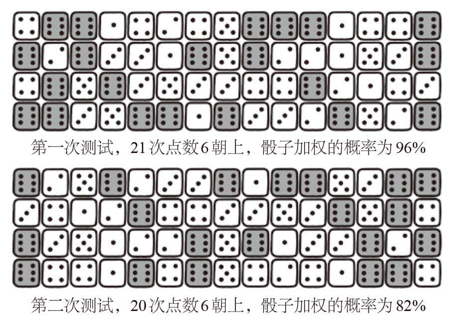
图3-5 两次独立的骰子测试。第一次测试我们投掷了60次，得到21次点数6朝上的结果，而第二次测试得到了20次点数6朝上的结果。第二次测试似乎降低了第一次测试的置信度
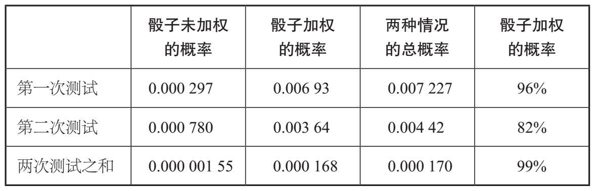
然而，当我们把结果结合起来看时，如图3–6所示，就会发现我们总共掷了120次骰子。对于未加权的骰子，我们预计平均会出现20次数字6朝上的结果。但实际上它出现了41次。如果骰子未加权，则掷骰子120次共出现41次点数6朝上的概率仅为0.00000155；而如果骰子被加权，则出现41次点数6朝上的可能性是前者的约100倍，为0.000 168。因此，考虑到已知的出现了41次点数6朝上的结果，骰子加权的概率就会超过99%。
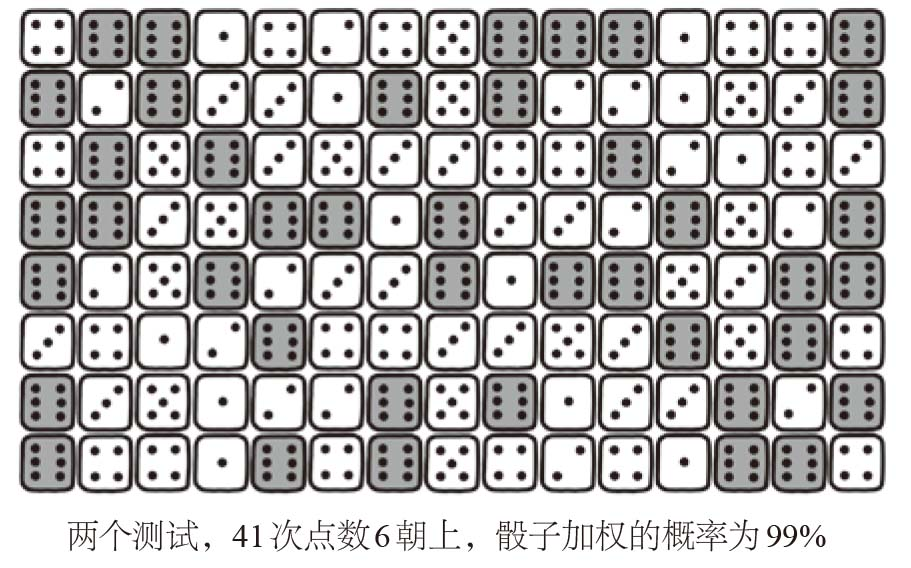
图3-6 在两次测试的120次投掷中，共有41次点数6朝上，由此可得出总的加权概率
令人惊讶的是，将两个不怎么有说服力的测试结果结合起来，竟然会比单一的测试结果更有说服力。在系统评价的科学实践中经常采用类似的技术。比如，医学系统评价综合考虑了多项临床试验，由于试验参与者数量较少，这些临床试验本身可能无法确定某种疗法的有效性。然而，当把多个独立试验的结果结合起来后，通常可以对干预的有效性或其他方面得出具有统计学显著性的结论。也许对替代药物的分析是对系统评价最著名的应用，但对此进行大规模的临床试验却缺乏必要的资金。通过结合多个看似不确定的试验，系统评价揭穿了使用蔓越莓治疗尿路感染[17]和使用维生素C预防感冒等骗局。[18]
同样，莉拉·施内帕斯和科拉列·科尔梅认为，将两个不确定的DNA测试结果结合起来，有可能为克尔彻的DNA与索莱西托厨房里的刀之间的联系提供更有力的证据。而赫尔曼法官的判决剥夺了法院听取此类证据的机会，全世界也没有机会看到这些证据对审判结果产生的可能影响。
对于一个完整的DNA样本，其存在的微小概率似乎非常令人信服，但我们应该记住，不要被法庭中这些极大或极小的数字蒙蔽。我们应该始终谨慎地考虑这些数字产生的背景，并牢记如果没有适当的解释，在脱离背景的情况下简单地引用这些极端数据，并不能证明嫌疑人是无辜的或者有罪的。
梅多在莎莉·克拉克的案件中编造的“七千三百万分之一的概率”就是这样一个反例。由于其中存在的错误的独立性假设（第一个婴儿死于SIDS并未改变第二个婴儿死于SIDS的可能性）以及生态谬误（基于一些精心挑选的人口统计细节，错误地将克拉克家庭归入低风险类别），这个数字远小于真实概率。重要的是，这个数字诱使任何公正的陪审团都认为莎莉无罪的可能性是七千三百万分之一，而想不到这个概率是检察官谬误的产物。事实上，陪审团之所以给莎莉定罪，在很大程度上是基于梅多对这一概率的错误解读。
我们既不能因为极小的可能性就轻易相信某人有罪，也不应该简单地把这些数据作为某人无罪的证据。安德鲁·迪恩因检察官谬误而声名狼藉，从DNA证据来看，他有罪的可能性被放大了。在上诉过程中，迪恩的辩护律师试图将DNA匹配的概率修正为1/2 500，这使迪恩成为犯罪现场附近的成千上万名可能的嫌疑人之一。有人可能会辩称，这会导致DNA证据毫无价值。然而，这一论点同样是错误的，被称为“辩护律师谬误”。DNA证据不应该被舍弃，而应与其他证明嫌疑人有罪或无罪的证据一起使用。迪恩的有罪判决受到了质疑，部分原因是检察官谬误对陪审团产生了误导性影响。然而，重审结果是迪恩认罪，并被判处强奸罪成立。
施内帕斯和科尔梅用同样的方法令人信服地证明：赫尔曼法官拒绝在阿曼达·诺克斯案件中重新测试DNA，反而可能有助于她重获自由。2013年，诺克斯的无罪判决被撤销，法官同意测试第二个DNA样本。事实证明，该DNA样本正是源自诺克斯。2015年，在她的最终上诉中，法官和陪审团认为这把刀的收集和检查过程没有按照法定程序进行。所涉及的错误包括刀被收集和存放在未密封的信封中，然后被放入未经消毒的纸板箱，警察没有穿正确的防护服，其中一位曾在克尔彻公寓出现的警察直到当天晚些时候才上交刀子作为证据。实验室内的污染因素也很难排除在外，至少有20个克尔彻的样本之前在那里做过测试，然后才对可疑的谋杀工具进行了DNA检测。如果在刀上发现的原始DNA样本是源于实验室污染，那么无论做多少次测试都不会改变DNA属于克尔彻的事实，我们也无法回答它是如何出现在那把刀上的。事实上，如果有更多被污染的DNA样本，再次检测可能会为诺克斯的有罪判决增添更多错误的证据。
我们总是过于关注一个简洁的数学论证、一个复杂的计算或一个令人难忘的数字等，却经常忘了问一个最关键的问题：我们所做的计算是否和问题本身高度相关？
*
在莎莉·克拉克的案件中，梅多对在一个家庭中连续发生两次SIDS致死事件的概率估计成为影响陪审团的关键统计数据。经过仔细分析，我们可能会问当初为何要计算这个概率。在审判过程中，没有人讨论克拉克家的两个婴儿是否都死于SIDS。在克里斯托弗死亡时，做尸检的病理学家证实克里斯托弗死于下呼吸道感染。这与SIDS的诊断不同，通常来说只有在排除其他所有可能的原因后，才会将死亡归因于SIDS。辩方声称这是一次自然原因导致的死亡，而控方声称这就是谋杀，但没有人说SIDS是两个婴儿的真正死因。梅多声称他的统计数据可以描述同一个家庭中有两个孩子死于SIDS的可能性，但这与庭审没有任何关系。然而，这个数据似乎成了陪审员裁定时的重要参考，因为他们的结论是，莎莉谋杀了她的两个孩子。
2003年1月，在第二次上诉中，莎莉的律师提交了自她定罪以来发现的新证据。莎莉的第二个儿子哈利的尸检报告清楚地表明，他的脑脊液中存在金黄色葡萄球菌。据专家介绍，这种感染极有可能引发某种形式的细菌性脑膜炎，最终导致哈利死亡。虽然新的微生物学证据足以对莎莉的有罪判决提出质疑，但上诉法官表示，原审判中滥用的统计数据已足以支持此次上诉。
2003年1月29日，莎莉终于获释。她回到史蒂夫和他们的第三个孩子身边，那时这个孩子已经4岁了。在她获释后发表的一份声明中，她谈到自己终于可以悼念两个逝去的孩子了，她也提到回到丈夫身边的重要性，并为能继续成为她的孩子的母亲和拥有一个完整的家庭而兴奋。尽管与家人团聚让她感到非常高兴，但这样的幸福并不足以弥补她含冤入狱多年所受的伤害。2007年3月，她因酒精中毒被发现死于家中。可见，她并没有真正地从那段误判经历中走出来。
*
我们可以从法庭上的经验教训扩展到我们生活的其他方面。我们将在下一章中看到，应如何谨慎对待报纸头条中引起我们注意的数据、广告商的推销话术，以及从朋友或同事那里听到的闲言碎语。事实上，只要有数字的地方，几乎都会有人在利益的驱使下操纵它们，所以我们更应该审慎地对待所有结论，并要求做出更多解释。任何对自己提供的数据的真实性充满信心的人，都会很乐意提供这些解释。即使对训练有素的数学家来说，有时候数学和统计学也很难理解，所以我们在这些领域更需要专家的帮助。如果有需要，你可以向专业人士寻求帮助，任何一位称职的数学家应该都会乐意效劳。更重要的是，我们必须先质疑在我们所面对的问题中使用数学这种工具是否合适，再去做数学论证。
毫无疑问，随着可量化的证据变得越来越普遍，数学论证在现代司法系统中的作用已不可替代。但如果它被蓄意误用，数学会成为妨碍正义的工具，使无辜的人失去自由和权利，在极端情况下还会失去生命。
[1] page 91 ‘Bertillon suggested that the similarities were not coincidences, but‘must have been done carefully on purpose, and must denote a purposeful intention, probably a secret code”.’ Schneps, L., & Colmez, C. (2013). Math on trial : how numbers get used and abused in the courtroom, Basic Books (New York).
[2] page 92 ‘By exposing Bertillon’s miscalculation and arguing that even attempting to apply probability theory to such a question was not legitimate,Poincaré was able to debunk the aberrant handwriting analysis and in so doing to exonerate Dreyfus.’ Jean Mawhin. (2005). Henri Poincaré. A life in the service of science. Notices of the American Mathematical Society, 52(9), 1036–44.
[3] page 93 ‘The Japanese criminal justice system, for example, has a conviction rate of 99.9%, with most of these convictions backed up with a confession.’ Ramseyer, J. M., & Rasmusen, E. B. (2001). Why is the Japanese conviction rate so high? The Journal of Legal Studies, 30(1), 53–88. https://doi.org/10.1086/468111
[4] page 96 ‘In 1989, Meadow, at the time an eminent British paediatrician, had edited a book, ABC of Child Abuse, in which was contained the aphorism that came to be known as Meadow’s law: ‘One sudden infant death is a tragedy, two is suspicious and three is murder until proved otherwise’.’ Meadow, R. (Ed.) (1989). ABC of Child Abuse (First edition). British Medical Journal Publishing Group.
[5] page 97 ‘The prevalence of autism in the UK is roughly 1 per 100’ Brugha, T., Cooper, S., McManus, S., Purdon, S., Smith, J., Scott, F., . . .Tyrer, F. (2012). Estimating the Prevalence of Autism Spectrum Conditions in Adults – Extending the 2007 Adult Psychiatric Morbidity Survey – NHS Digital.
[6] page 98 ‘Only one in five of those on the autistic spectrum are female Ehlers, S., & Gillberg, C. (1993). The Epidemiology of Asperger Syndrome. Journal of Child Psychology and Psychiatry, 34(8), 1327–50. https://doi.org/10.1111/j.1469-7610.1993.tb02094.x
[7] page 98 ‘For his figures, Meadow used a - then unpublished - report on SIDS for which he had been asked to write the preface.’ Fleming, P. J., Blair, P. S. P., Bacon, C., & Berry, P. J. (2000). Sudden unexpected deaths in infancy: the CESDI SUDI studies 1993–1996. The Stationery Offic Leach, C. E. A., Blair, P. S., Fleming, P. J., Smith, I. J., Platt, M. W., Berry,P. J., . . . Group, the C. S. R. (1999). Epidemiology of SIDS and explained sudden infant deaths. Pediatrics, 104(4), e43.
[8] page 99 ‘In 2001, researchers at the University of Manchester also identified markers in genes related to the regulation of the immune system which put children at increased risk of SIDS.’ Summers, A. M., Summers, C. W., Drucker, D. B., Hajeer, A. H., Barson,A., & Hutchinson, I. V. (2000). Association of IL-10 genotype with sudden infant death syndrome. Human Immunology, 61(12), 1270–73. https://doi.org/10.1016/S0198-8859(00)00183-X
[9] page 99 ‘Many more genetic risk factors have since been identified. Brownstein, C. A., Poduri, A., Goldstein, R. D., & Holm, I. A. (2018). The genetics of Sudden Infant Death Syndrome. In SIDS: Sudden Infant and Early Childhood Death: The Past, the Present and the Future. Dashash, M., Pravica, V., Hutchinson, I. V., Barson, A. J., & Drucker, D. B. (2006). Association of Sudden Infant Death Syndrome with VEGF and IL-6 Gene polymorphisms. Human Immunology, 67(8), 627–33. https://doi. org/10.1016/J.HUMIMM.2006.05.002
[10] page 106 ‘measuring the health of the economy’ Ma, Y. Z. (2015). Simpson’s paradox in GDP and per capita GDP growths. Empirical Economics, 49(4), 1301–15. https://doi.org/10.1007/ s00181-015-0921-3
[11] page 106 ‘understanding voter profiles Nurmi, H. (1998). Voting paradoxes and referenda. Social Choice and Welfare, 15(3), 333–50. https://doi.org/10.1007/s003550050109
[12] page 106 ‘drug development’ Abramson, N. S., Kelsey, S. F., Safar, P., & Sutton-Tyrrell, K. (1992). Simpson’s paradox and clinical trials: What you find is not necessarily what you prove. Annals of Emergency Medicine, 21(12), 1480–82. https://doi. org/10.1016/S0196-0644(05)80066-6
[13] page 109 ‘Low birth-weight had long been associated with higher infant mortality, but it seemed that smoking during pregnancy was providing some protection to low birth-weight babies.’ Yerushalmy, J. (1971). The relationship of parents’ cigarette smoking to outcome of pregnancy – implications as to the problem of inferring causation from observed associations. American Journal of Epidemiology, 93(6), 443–56. https://doi.org/10.1093/oxfordjournals.aje.a121278
[14] page 109 ‘In reality, it was nothing of the sort.’ Wilcox, A. J. (2001). On the importance – and the unimportance – of birthweight. International Journal of Epidemiology, 30(6), 1233–41. https://doi.org/10.1093/ije/30.6.1233
[15] page 114 ‘Double infant murder has been calculated to be between ten and 100 times less frequent than double SIDS death.’ Dawid, A. P. (2005). Bayes’s theorem and weighing evidence by juries. In Richard Swinburne (ed.), Bayes’s Theorem. British Academy. https://doi. org/10.5871/bacad/9780197263419.003.0004 Hill, R. (2004). Multiple sudden infant deaths – coincidence or beyond coincidence? Paediatric and Perinatal Epidemiology, 18(5), 320–26. https://doi.org/10.1111/j.1365-3016.2004.00560.x
[16] page 122 ‘But Leila Schneps and Coralie Colmez, authors of the 2013 book, Math on Trial: How Numbers Get Used and Abused in the Courtroom,suggest that Judge Hellmann was wrong, sometimes two unreliable tests are better than one.’ Schneps, L., & Colmez, C. (2013). Math on Trial: How Numbers Get Used and Abused in the Courtroom.
[17] page 126 ‘the use of cranberries to treat urinary tract infections’ Jepson, R. G., Williams, G., & Craig, J. C. (2012). Cranberries for preventing urinary tract infections. Cochrane Database of Systematic Reviews, (10). https://doi.org/10.1002/14651858.CD001321.pub5
[18] page 126 ‘the use of vitamin C for preventing the common cold.’ Hemilä, H., Chalker, E., & Douglas, B. (2007). Vitamin C for preventing and treating the common cold. Cochrane Database of Systematic Reviews, (3).https://doi.org/10.1002/14651858.CD000980.pub3